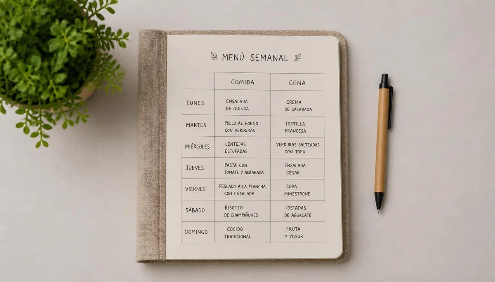

Organización de menús y hábitos en la mesa
Planificar el menú semanal y estructurar las comidas familiares suele plantear un desafío cotidiano en los hogares con niños. Lejos de buscar combinaciones complejas o platos exclusivos para los menores, el objetivo principal radica en diseñar propuestas sencillas y equilibradas que integren verduras, proteínas de calidad e hidratos complejos, fomentando un clima de tranquilidad y disfrute alrededor de la mesa.
Estructurar el plato de forma visual y equilibrada
Una de las formas más prácticas de asegurar una nutrición completa consiste en visualizar el plato como un conjunto armónico donde los vegetales ocupan el espacio principal, acompañados por fuentes proteicas de calidad y cereales integrales o tubérculos. Esta distribución facilita la variedad de micronutrientes sin necesidad de calcular raciones estrictas ni caer en la monotonía culinaria.
Evitar las tensiones y convertir la comida en un espacio de encuentro
Las batallas campales en torno a la comida suelen generar rechazo y ansiedad tanto en los adultos como en los menores. Establecer rutinas predecibles, horarios relajados y evitar presiones o sobornos con los alimentos ayuda a que el niño recupere su autorregulación innata de la saciedad y se acerque a los nuevos sabores desde la curiosidad y el respeto mutuo.
"La mesa familiar debe ser un punto de encuentro y calma, no un escenario de negociación donde se midan las cucharadas de comida ingeridas."
Planificación semanal para simplificar el día a día
Anticipar las preparaciones de la semana libera tiempo mental y evita recurrir a opciones improvisadas o ultraprocesadas en los momentos de mayor cansancio, consolidando un hábito saludable y sostenible para toda la familia.
➔ Volver al índice de Nutrición saludable